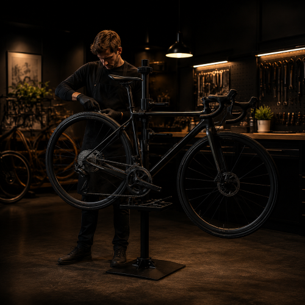
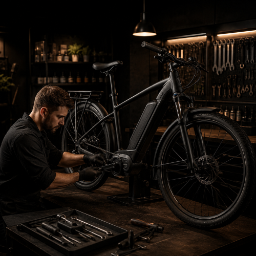
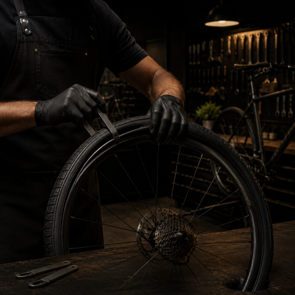
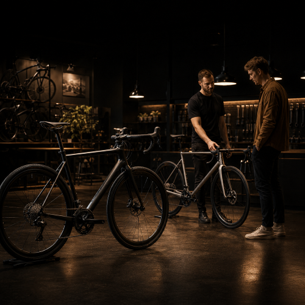

Pyörän kausihuolto
Kattava vuosittainen huolto, joka pitää pyöräsi huippukunnossa koko kauden. Sisältää jarrujen, vaihteiston ja koko pyörän täystarkastuksen.
Lue lisää →Kokeneet mekaanikkamme huoltavat pyöräsi nopeasti ja laadukkaasti. Myymme myös uusia ja käytettyjä pyöriä edullisesti.

Kattava vuosittainen huolto, joka pitää pyöräsi huippukunnossa koko kauden. Sisältää jarrujen, vaihteiston ja koko pyörän täystarkastuksen.
Lue lisää →
Akun testaus ja vaihto, moottorin huolto, ohjelmistopäivitykset sekä koko sähköjärjestelmän diagnostiikka ammattitaidolla.
Lue lisää →
Nopea renkaanvaihto, sisä- tai ulkorenkaan vaihto, tubeless-asennus sekä paikkaus. Pyöräsi takaisin ajokuntoon hetkessä.
Lue lisää →
Laaja valikoima uusia ja käytettyjä pyöriä. Autamme löytämään juuri oikean pyörän tarpeidesi ja budjettisi mukaan.
Lue lisää →Yli 10 vuoden kokemus erilaisten pyörien huolloista.
Useimmat huollot valmiina saman tai seuraavan päivän aikana.
Kerromme etukäteen mitä tehdään ja mitä se maksaa.
Tervetuloa tutustumaan paikan päälle.
BikeDoc sai alkunsa vuonna 2021, kun vahva kiinnostus pyöriä ja niiden huoltamista kohtaan kasvoi nopeasti vakavasti otettavaksi tekemiseksi. Toiminnan lähtökohtana on ollut halu tehdä asiat huolella ja oikein – yhdistää tekninen osaaminen käytännön kokemukseen tavalla, joka näkyy työn laadussa.
BikeDoc palvelee monipuolisesti kaikenlaisia pyöräilijöitä kaupunkipyörien käyttäjistä aina vaativien maasto- ja sähköpyörien omistajiin. Jokainen huolto tehdään läpinäkyvästi ja asiakkaan kannalta selkeästi – tiedät etukäteen mitä pyörällesi tehdään ja miksi. Yrityksen kasvu on rakentunut ennen kaikkea tyytyväisten asiakkaiden suosituksille ja huolellisesti tehdylle työlle.
Luotamme näihin tuotemerkkeihin
“Ajanvaraus onnistui helposti suoraan nettisivuilta ja kaikki toimi juuri niin kuin pitikin. Pyörä otettiin heti työn alle ja palvelu oli alusta loppuun todella avuliasta ja asiantuntevaa. Tänne on helppo tulla uudelleen.”
— Joona K., Joensuu“Ostin BikeDocilta työsuhdepyörän ja koko prosessi sujui todella vaivattomasti. Autettiin sopivan mallin valinnassa ja pyörä oli juuri oikean kokoinen. Hinta-laatusuhde oli erinomainen ja kokonaisuus jäi todella positiiviseksi.”
— Virpi L., Ylämylly“Tarvitsin nopean korjauksen ja pyörä saatiin kuntoon jo saman päivän aikana. Työ tehtiin huolellisesti ja samalla annettiin hyviä vinkkejä jatkoa varten. Asiantuntevaa ja sujuvaa palvelua.”
— Juha S., KontiolahtiHuollon kesto on yleensä noin 2–4 arkipäivää riippuen sen laajuudesta ja ajankohdan ruuhkatilanteesta. Pienemmät työt voidaan usein tehdä myös saman päivän aikana tai sovittaessa odottaessa.
Suosittelemme varaamaan ajan etukäteen, jotta huolto saadaan tehtyä mahdollisimman sujuvasti. Ajan voi varata helposti puhelimitse, WhatsAppilla tai verkkosivujen ajanvarauksen kautta.
Kyllä. Huollamme sähköpyöriä ja käytössämme on diagnostiikka Shimano- ja Bosch-järjestelmille. Tarvittaessa voimme tehdä myös ohjelmistopäivityksiä ja tarkistuksia.
Pääsääntöisesti käytämme omia varaosiamme, jotta voimme taata työn laadun ja antaa huollolle takuun. Poikkeustapauksissa asiakkaan omia osia voidaan asentaa, mutta tällöin emme voi myöntää työlle tai osille takuuta.
Huoltopaketin hintaan sisältyy työn osuus. Mahdolliset varaosat, kuten ketjut, jarrupalat tai renkaat, laskutetaan erikseen. Otamme aina yhteyttä, jos huollon yhteydessä ilmenee lisätarpeita.
Emme tee lisätöitä ilman asiakkaan hyväksyntää. Otamme aina yhteyttä ja kerromme selkeästi, mitä kannattaa tehdä ja mitä se maksaa.
Pyörä kannattaa huoltaa vähintään kerran vuodessa, esimerkiksi keväällä ennen ajokauden alkua. Jos pyörä on kovassa käytössä, huoltotarve voi olla useammin.
Varaa aika muutamassa minuutissa ja anna pyöräsi meidän huoleksemme. Saat selkeän varauspolun ja voit siirtyä suoraan ajanvaraukseen silloin, kun se sinulle sopii.
Siirry ajanvaraukseen